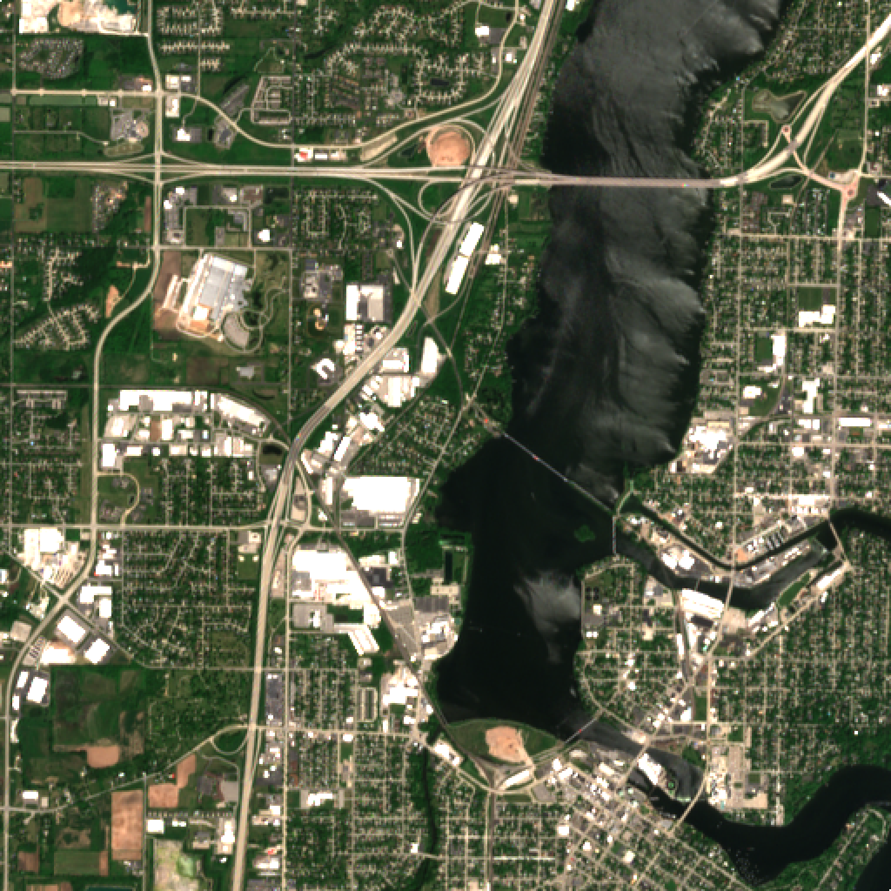
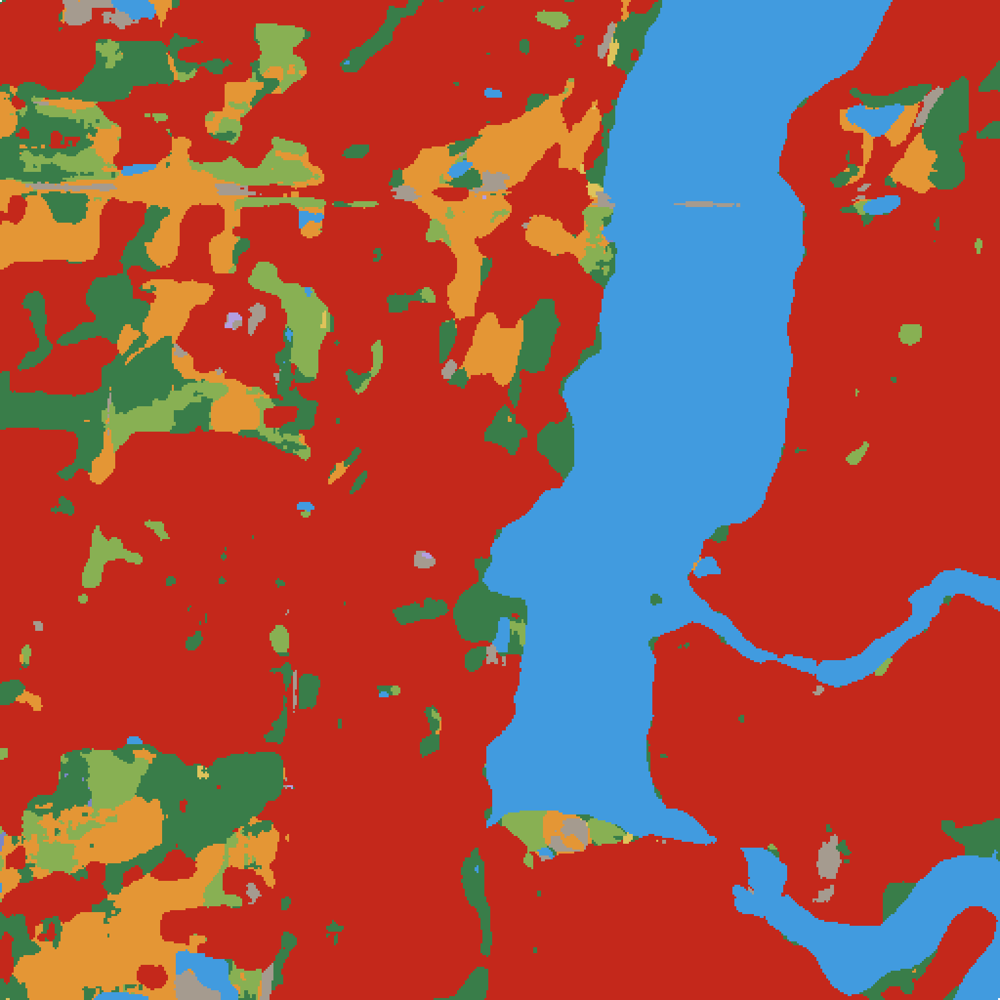
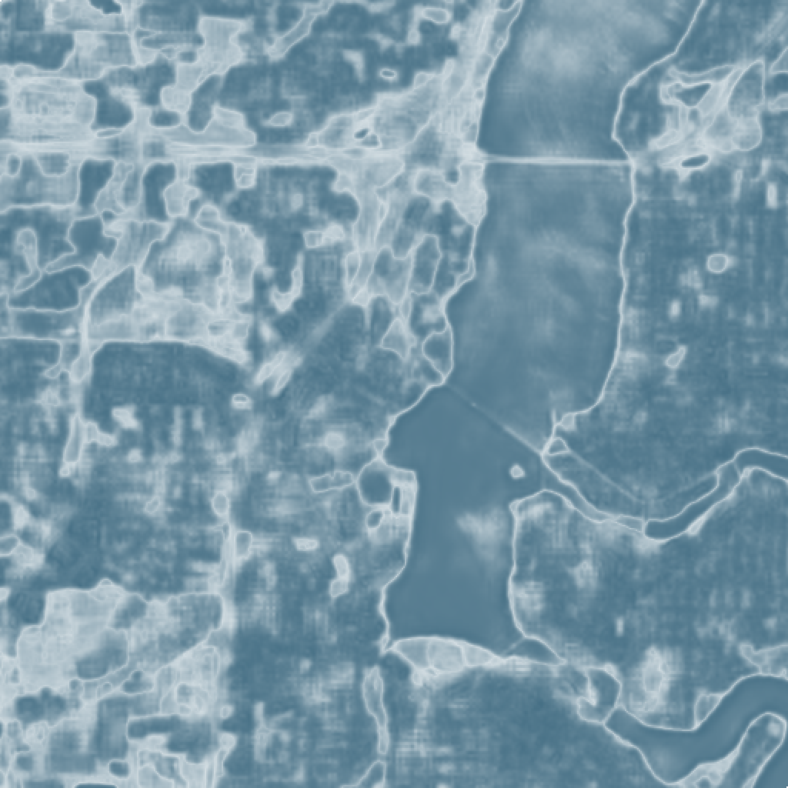
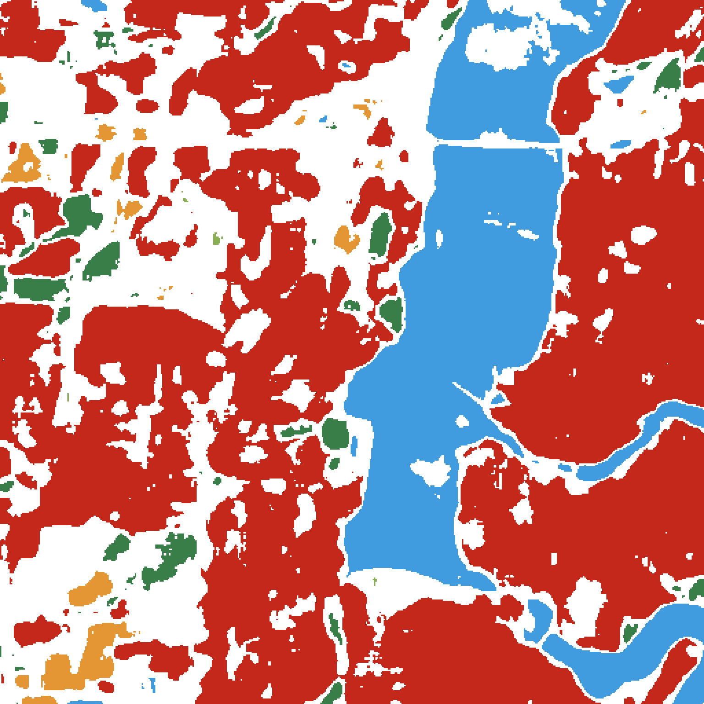
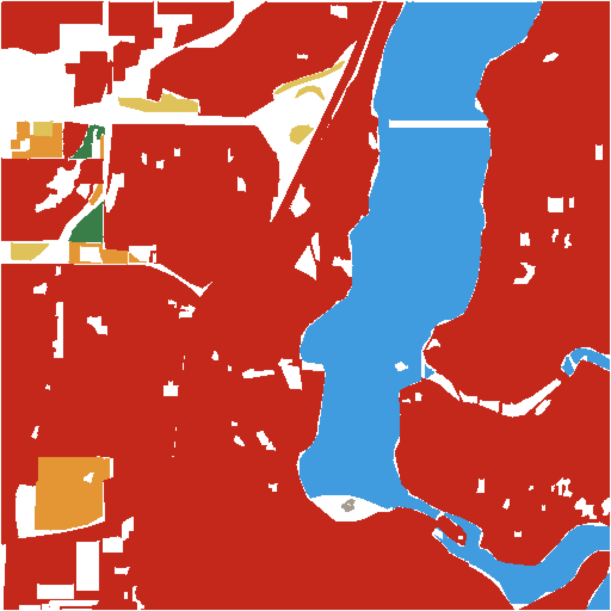
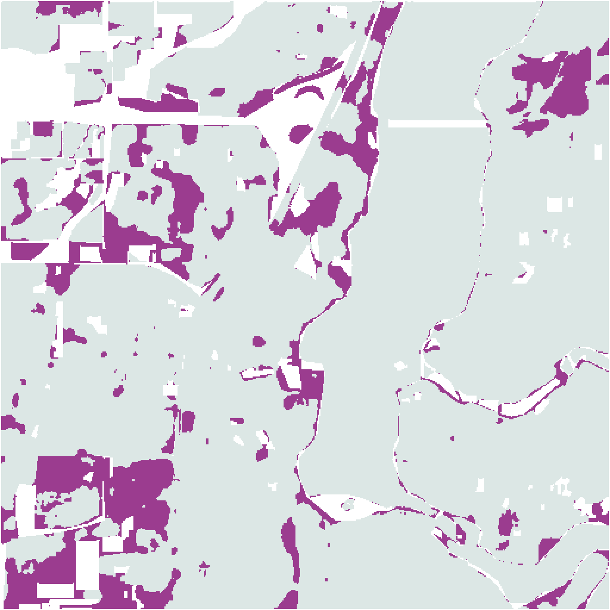

位置A的九類分數
- 水面2.2%
- 樹木2.2%
- 草地2.7%
- 淹水植被2.4%
- 作物2.4%
- 灌木與灌叢2.7%
- 建成區78.8%
- 裸地3.9%
- 冰雪2.9%
兩個位置都被標成建成區，分數卻很不同。模型為九種地表各估一個機率，最高的一類成為顏色；分數高低，還不能當作判對的保證。



有圖片尚未載入。九類分數與文字仍可閱讀。
建成區78.8%；第二名裸地3.9%。
各值獨立四捨五入，合計可能不是100.0%。分數不是建物面積比例，也不是判對保證。
最高分不高時，可以怎麼讀？每個有效格子仍會選出一類。一起看最高分和其他類別，才知道模型是否明顯偏向某個答案。
淺色接近0、深色接近1。這是九類中的最大分數，不是高度，也不是已驗證的正確率。

A的78.8%留下；B的28.6%暫不採用。原來的類別色不變。
0.5是這裡自訂的教學門檻，不是作者推薦給所有用途的通用值。提高門檻會縮小保留範圍，也不能保證剩下的格子全部判對。
這張門檻圖的留白，可能是沒有達到本次門檻，也可能是原始分數無效。兩種情況都不能改讀成「沒有建成區」或「沒有任何土地覆蓋」。
Dynamic World為每張合格的Sentinel-2影像產生分類，並處理雲與雲影。衛星重訪不等於每個格子都有可用的新觀測。
這是更新流程的說明。本頁使用2019年的固定驗證資料；這段流程不是當地的連續觀測。
Dynamic World原模型配對使用Sentinel-2 L1C影像。本頁彩色圖是同次觀測、同網格的L2A參考影像，沒有把它重新送進模型。10公尺是原生網格大小，不代表能辨認每棟建物，也不是10公尺的誤差保證。
從真實地景開始，對照兩點的分數，再看專家參考、教學門檻與研究驗證。
水面、植被、房屋和道路交錯在一起。Dynamic World把衛星影像中的線索，整理成九種土地覆蓋的分數與標籤。
美國Fox Valley，2019-06-08。同次觀測的L2A參考影像，處理方式與模型使用的L1C影像不同。
模型對每一格估計九類機率，再取最高者作為標籤。紅色代表建成區，藍色代表水面；只看顏色，還不知道最高分有多高。
分類來自作者公開驗證資料。不是本頁重新執行模型。
這兩個位置的最高類別都是建成區，但完整的九類分數不同。一起看最高分與其他類別，才能看見標籤沒有呈現的差別。
機率不是建物面積比例，也不是已校準的逐格正確率。
研究先用其他影像及人工標記訓練模型，再拿沒參與訓練的影像，對照模型分類與專家參考。這張圖就來自保留的驗證資料。
專家參考也有判讀差異；不一致不等於本頁已確認現地狀況。
如果分析只想先保留支持較集中的位置，可以設定門檻。這裡示範最高機率至少0.5才保留，A留下、B暫不採用。
0.5只是這段教學自訂的門檻，不是研究推薦的通用值。
每張合格的Sentinel-2影像，各自產生分類。被判定為雲或雲影的位置會被遮蔽；沒有可用影像時，也不會有可靠的新判讀。
流程示意，不是此地的實際天氣或多日期觀測。
作者保留409塊影像作測試。在納入比較的像素中，模型最高類別與專家共識的整體一致率約為73.8%。不同類別仍有不同表現。
這是測試資料的一致率，不是每一格的機率，也不能直接校正任意地區的面積。
標籤方便看分布，九類機率保留模型的猶豫；日期與觀測條件則告訴我們，這張圖是在什麼情況下做出的。重要判斷仍要回查影像與其他資料。
本頁是固定的2019驗證示例。服務持續供應新資料，不代表這個示例是即時地圖。
研究者保留409塊沒有參與訓練的影像，比較模型最高類別與作者定義的專家共識。這裡的Fox Valley影像，就是其中一個驗證示例。
正式Table 7將有效比較像素的計數合併後，得到約73.8%的整體一致率。不同地表類別仍有不同表現。
73.8%409塊保留影像 · Table 7
這是測試資料的整體一致率，不是九類等權平均，也不是每一格有73.8%的正確機率。


只比較雙方都有有效資料的格子。淺灰為一致，透明區未納入比較。
作者公開驗證資料的同一影像塊；不是本頁訓練模型，也不以這張圖代表全球準確率。人工標記是影像判讀的參考，不是每一格都在現地量過的絕對真值。模型與參考不同，表示這裡值得回看，不能直接說每個紫點都已確認判錯。
沒有人工標記、或沒有有效模型分數的位置，不列入這張對照。未標註區也不會被補成水面。
顏色方便看分布；分數、影像與參考比較，幫助我們決定哪裡還要查證。
正式Table 7納入68,137,571個有效比較像素，其中50,299,775個的模型標籤與Expert Consensus相同。這是像素計數合併後的比率，不是409張影像各自精度的等權平均；這些像素也不等於同樣多個獨立現地樣本。
作者指出，這些測試矩陣不是母體混淆矩陣。若要估計某個地區、某個月份或重新分類後的面積，必須先定義自己的地圖與參考抽樣，不能直接拿73.8%校正面積。
不同日期的標籤改變，可能來自真正的地表變化，也可能與季節、積雪、可見條件或分類混淆有關。不能只看到變色，就宣布土地永久轉換。
「樹木」類別也不等於天然森林、健康森林或碳量。要回答這些問題，還需要適合的觀測與分析。
Brown等（2022），Dynamic World，Scientific Data 9，251。本文主要驗證依正式Table 7；來源為CC BY 4.0。
作者公開驗證資料v2提供本頁九類原始分數、模型標籤及專家參考。這是固定的2019示例，與持續更新的Dynamic World產品分開。
RGB取自同次觀測的Sentinel-2 L2A公開COG，B04／B03／B02真彩參考。Contains modified Copernicus Sentinel data 2019。本頁沒有重新推論模型；最高分、門檻與不一致圖是由原始資料衍生的教學呈現。
Dynamic World資料由Google與National Geographic Society、World Resources Institute合作製作，依CC BY 4.0署名。完整素材、處理與限制 · 資料與兩點原始分數